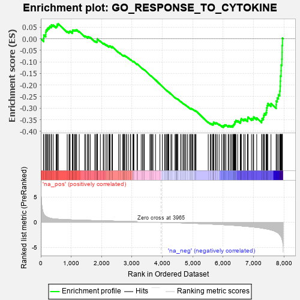
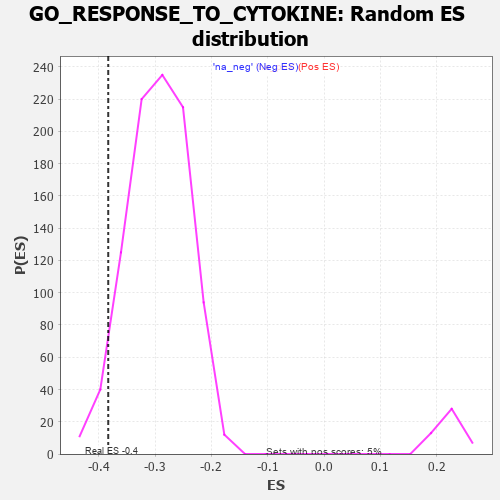

| | | Dataset | 7d |
| Phenotype | NoPhenotypeAvailable |
| Upregulated in class | na_neg |
| GeneSet | GO_RESPONSE_TO_CYTOKINE |
| Enrichment Score (ES) | -0.38335824 |
| Normalized Enrichment Score (NES) | -1.3012397 |
| Nominal p-value | 0.04621849 |
| FDR q-value | 0.46960372 |
| FWER p-Value | 1.0 |
Table: GSEA Results Summary

Fig 1: Enrichment plot: GO_RESPONSE_TO_CYTOKINE
Profile of the Running ES Score & Positions of GeneSet Members on the Rank Ordered List
| PROBE | GENE SYMBOL | GENE_TITLE | RANK IN GENE LIST | RANK METRIC SCORE | RUNNING ES | CORE ENRICHMENT | | 1 | UBE2K | | | 94 | 1.739 | 0.0030 | No |
| 2 | IRS1 | | | 98 | 1.659 | 0.0169 | No |
| 3 | SPI1 | | | 162 | 1.182 | 0.0191 | No |
| 4 | TEX14 | | | 164 | 1.179 | 0.0291 | No |
| 5 | FOXF1 | | | 176 | 1.136 | 0.0376 | No |
| 6 | RHOU | | | 210 | 1.031 | 0.0422 | No |
| 7 | DCST1 | | | 237 | 0.959 | 0.0472 | No |
| 8 | HGF | | | 276 | 0.870 | 0.0498 | No |
| 9 | FSCN1 | | | 297 | 0.830 | 0.0544 | No |
| 10 | CNOT7 | | | 348 | 0.750 | 0.0545 | No |
| 11 | GSK3A | | | 351 | 0.745 | 0.0607 | No |
| 12 | EED | | | 409 | 0.690 | 0.0593 | No |
| 13 | MYOD1 | | | 504 | 0.628 | 0.0527 | No |
| 14 | HTRA2 | | | 527 | 0.621 | 0.0552 | No |
| 15 | SRF | | | 542 | 0.615 | 0.0587 | No |
| 16 | MCM2 | | | 546 | 0.614 | 0.0637 | No |
| 17 | MX1 | | | 578 | 0.604 | 0.0649 | No |
| 18 | IGBP1 | | | 869 | 0.514 | 0.0321 | No |
| 19 | PDE1B | | | 929 | 0.500 | 0.0288 | No |
| 20 | PDCD4 | | | 941 | 0.497 | 0.0317 | No |
| 21 | CTR9 | | | 964 | 0.492 | 0.0332 | No |
| 22 | AKT1 | | | 1040 | 0.476 | 0.0276 | No |
| 23 | YAP1 | | | 1041 | 0.475 | 0.0317 | No |
| 24 | TAF9 | | | 1046 | 0.475 | 0.0353 | No |
| 25 | RBM15 | | | 1057 | 0.473 | 0.0381 | No |
| 26 | MYNN | | | 1098 | 0.464 | 0.0370 | No |
| 27 | SRC | | | 1128 | 0.459 | 0.0373 | No |
| 28 | PSMD7 | | | 1152 | 0.454 | 0.0382 | No |
| 29 | PSMD2 | | | 1181 | 0.450 | 0.0385 | No |
| 30 | NFIL3 | | | 1264 | 0.436 | 0.0318 | No |
| 31 | RBX1 | | | 1445 | 0.401 | 0.0121 | No |
| 32 | TIMP2 | | | 1478 | 0.394 | 0.0114 | No |
| 33 | NFYB | | | 1543 | 0.384 | 0.0065 | No |
| 34 | SOS1 | | | 1547 | 0.384 | 0.0094 | No |
| 35 | PTPRT | | | 1578 | 0.378 | 0.0088 | No |
| 36 | CDK4 | | | 1626 | 0.370 | 0.0060 | No |
| 37 | TLE4 | | | 1775 | 0.341 | -0.0101 | No |
| 38 | PSMD4 | | | 1811 | 0.335 | -0.0117 | No |
| 39 | TCF7 | | | 1848 | 0.328 | -0.0134 | No |
| 40 | TRIM5 | | | 1852 | 0.327 | -0.0110 | No |
| 41 | NFAT5 | | | 1856 | 0.326 | -0.0086 | No |
| 42 | OTUB1 | | | 1857 | 0.326 | -0.0057 | No |
| 43 | PSMD6 | | | 1858 | 0.326 | -0.0029 | No |
| 44 | SMAD4 | | | 1860 | 0.326 | -0.0002 | No |
| 45 | CCR4 | | | 1959 | 0.312 | -0.0101 | No |
| 46 | IRF4 | | | 2054 | 0.298 | -0.0196 | No |
| 47 | KDM3A | | | 2078 | 0.294 | -0.0200 | No |
| 48 | PSME4 | | | 2143 | 0.285 | -0.0258 | No |
| 49 | SYK | | | 2186 | 0.278 | -0.0288 | No |
| 50 | CREB1 | | | 2243 | 0.269 | -0.0337 | No |
| 51 | PSMF1 | | | 2251 | 0.268 | -0.0322 | No |
| 52 | PRDM5 | | | 2265 | 0.265 | -0.0316 | No |
| 53 | AIP | | | 2281 | 0.263 | -0.0313 | No |
| 54 | DOCK8 | | | 2341 | 0.254 | -0.0366 | No |
| 55 | CDC5L | | | 2353 | 0.253 | -0.0359 | No |
| 56 | MIF | | | 2357 | 0.252 | -0.0341 | No |
| 57 | PSMD5 | | | 2560 | 0.218 | -0.0581 | No |
| 58 | PDE12 | | | 2608 | 0.211 | -0.0624 | No |
| 59 | SRSF3 | | | 2696 | 0.199 | -0.0718 | No |
| 60 | SLIT2 | | | 2724 | 0.195 | -0.0736 | No |
| 61 | RORA | | | 2730 | 0.193 | -0.0726 | No |
| 62 | CUL1 | | | 2735 | 0.193 | -0.0714 | No |
| 63 | PPIA | | | 2754 | 0.190 | -0.0721 | No |
| 64 | FER | | | 2803 | 0.183 | -0.0767 | No |
| 65 | KAT6B | | | 2821 | 0.180 | -0.0773 | No |
| 66 | DAPK3 | | | 2880 | 0.169 | -0.0833 | No |
| 67 | LIFR | | | 2948 | 0.158 | -0.0905 | No |
| 68 | BTK | | | 2958 | 0.156 | -0.0903 | No |
| 69 | PIAS4 | | | 3034 | 0.145 | -0.0987 | No |
| 70 | LEF1 | | | 3037 | 0.144 | -0.0977 | No |
| 71 | ABCE1 | | | 3051 | 0.143 | -0.0981 | No |
| 72 | KEAP1 | | | 3063 | 0.141 | -0.0983 | No |
| 73 | GCH1 | | | 3166 | 0.127 | -0.1103 | No |
| 74 | PAX6 | | | 3170 | 0.127 | -0.1096 | No |
| 75 | PSMD9 | | | 3179 | 0.125 | -0.1096 | No |
| 76 | SMAD3 | | | 3303 | 0.105 | -0.1245 | No |
| 77 | TAB1 | | | 3351 | 0.097 | -0.1297 | No |
| 78 | SMAD7 | | | 3369 | 0.093 | -0.1311 | No |
| 79 | MED1 | | | 3405 | 0.089 | -0.1348 | No |
| 80 | TRAIP | | | 3408 | 0.088 | -0.1343 | No |
| 81 | MAPK3 | | | 3589 | 0.062 | -0.1569 | No |
| 82 | CBL | | | 3621 | 0.056 | -0.1604 | No |
| 83 | ACSL4 | | | 3632 | 0.055 | -0.1612 | No |
| 84 | SKP1 | | | 3663 | 0.049 | -0.1646 | No |
| 85 | DHX9 | | | 3693 | 0.044 | -0.1680 | No |
| 86 | SBNO2 | | | 3774 | 0.032 | -0.1780 | No |
| 87 | IFIH1 | | | 3919 | 0.006 | -0.1964 | No |
| 88 | DDX58 | | | 3998 | -0.007 | -0.2064 | No |
| 89 | CSF1 | | | 4074 | -0.019 | -0.2158 | No |
| 90 | TRAF1 | | | 4104 | -0.024 | -0.2194 | No |
| 91 | CRK | | | 4139 | -0.031 | -0.2235 | No |
| 92 | GFI1 | | | 4168 | -0.037 | -0.2267 | No |
| 93 | PDX1 | | | 4179 | -0.038 | -0.2277 | No |
| 94 | PIGA | | | 4198 | -0.041 | -0.2297 | No |
| 95 | GGT7 | | | 4200 | -0.041 | -0.2294 | No |
| 96 | TIMP1 | | | 4209 | -0.043 | -0.2301 | No |
| 97 | PSME3 | | | 4280 | -0.056 | -0.2386 | No |
| 98 | BAG4 | | | 4314 | -0.061 | -0.2423 | No |
| 99 | RALA | | | 4416 | -0.079 | -0.2546 | No |
| 100 | SETD2 | | | 4443 | -0.084 | -0.2572 | No |
| 101 | CDC37 | | | 4446 | -0.084 | -0.2567 | No |
| 102 | EPS8 | | | 4474 | -0.088 | -0.2595 | No |
| 103 | GFPT2 | | | 4475 | -0.089 | -0.2587 | No |
| 104 | STIP1 | | | 4500 | -0.095 | -0.2610 | No |
| 105 | ILK | | | 4510 | -0.096 | -0.2613 | No |
| 106 | NUB1 | | | 4604 | -0.119 | -0.2722 | No |
| 107 | GATA3 | | | 4614 | -0.120 | -0.2723 | No |
| 108 | MTAP | | | 4675 | -0.133 | -0.2789 | No |
| 109 | RAP1B | | | 4706 | -0.140 | -0.2815 | No |
| 110 | PDIA3 | | | 4740 | -0.147 | -0.2845 | No |
| 111 | PIM1 | | | 4776 | -0.152 | -0.2877 | No |
| 112 | CNN2 | | | 4828 | -0.163 | -0.2928 | No |
| 113 | SLIT3 | | | 4890 | -0.175 | -0.2991 | No |
| 114 | CASP1 | | | 4932 | -0.185 | -0.3028 | No |
| 115 | FZD4 | | | 4940 | -0.186 | -0.3021 | No |
| 116 | XRCC5 | | | 4946 | -0.187 | -0.3011 | No |
| 117 | ACKR4 | | | 4981 | -0.194 | -0.3038 | No |
| 118 | KLF4 | | | 5005 | -0.198 | -0.3050 | No |
| 119 | DDX41 | | | 5058 | -0.211 | -0.3099 | No |
| 120 | FLNB | | | 5082 | -0.220 | -0.3109 | No |
| 121 | MMP9 | | | 5108 | -0.227 | -0.3122 | No |
| 122 | FABP4 | | | 5509 | -0.322 | -0.3608 | No |
| 123 | SPHK1 | | | 5576 | -0.339 | -0.3664 | No |
| 124 | MPC1 | | | 5603 | -0.345 | -0.3667 | No |
| 125 | WNK1 | | | 5650 | -0.362 | -0.3695 | No |
| 126 | PSMD1 | | | 5674 | -0.367 | -0.3693 | No |
| 127 | CASP8 | | | 5678 | -0.369 | -0.3664 | No |
| 128 | CDIP1 | | | 5684 | -0.370 | -0.3639 | No |
| 129 | MADD | | | 5686 | -0.371 | -0.3608 | No |
| 130 | MX2 | | | 5745 | -0.390 | -0.3649 | No |
| 131 | TLR2 | | | 5761 | -0.395 | -0.3634 | No |
| 132 | BBS4 | | | 5806 | -0.407 | -0.3655 | No |
| 133 | STAT4 | | | 5867 | -0.424 | -0.3696 | No |
| 134 | CXCR5 | | | 5954 | -0.456 | -0.3767 | No |
| 135 | PTPRN | | | 6007 | -0.474 | -0.3793 | Yes |
| 136 | XBP1 | | | 6011 | -0.475 | -0.3755 | Yes |
| 137 | VAMP3 | | | 6043 | -0.487 | -0.3753 | Yes |
| 138 | EVL | | | 6052 | -0.490 | -0.3721 | Yes |
| 139 | UBB | | | 6090 | -0.503 | -0.3725 | Yes |
| 140 | EGR1 | | | 6165 | -0.527 | -0.3775 | Yes |
| 141 | KLF2 | | | 6182 | -0.532 | -0.3749 | Yes |
| 142 | CDC42 | | | 6236 | -0.548 | -0.3770 | Yes |
| 143 | STK39 | | | 6274 | -0.563 | -0.3769 | Yes |
| 144 | NCAM1 | | | 6318 | -0.582 | -0.3773 | Yes |
| 145 | ELF1 | | | 6328 | -0.587 | -0.3734 | Yes |
| 146 | ABCD4 | | | 6349 | -0.597 | -0.3708 | Yes |
| 147 | BIRC3 | | | 6366 | -0.603 | -0.3677 | Yes |
| 148 | BBS2 | | | 6383 | -0.608 | -0.3645 | Yes |
| 149 | ISG15 | | | 6385 | -0.608 | -0.3593 | Yes |
| 150 | UBE2N | | | 6407 | -0.621 | -0.3567 | Yes |
| 151 | RAB43 | | | 6419 | -0.628 | -0.3526 | Yes |
| 152 | SOX2 | | | 6477 | -0.652 | -0.3543 | Yes |
| 153 | OTOP1 | | | 6562 | -0.690 | -0.3592 | Yes |
| 154 | ROBO1 | | | 6577 | -0.699 | -0.3549 | Yes |
| 155 | ARF1 | | | 6583 | -0.701 | -0.3495 | Yes |
| 156 | TPR | | | 6597 | -0.709 | -0.3450 | Yes |
| 157 | RFFL | | | 6674 | -0.749 | -0.3483 | Yes |
| 158 | GSK3B | | | 6719 | -0.768 | -0.3473 | Yes |
| 159 | KYNU | | | 6802 | -0.816 | -0.3508 | Yes |
| 160 | ADAM9 | | | 6808 | -0.819 | -0.3444 | Yes |
| 161 | GIPC1 | | | 6819 | -0.826 | -0.3385 | Yes |
| 162 | LRP8 | | | 6931 | -0.889 | -0.3451 | Yes |
| 163 | PDE2A | | | 6985 | -0.927 | -0.3439 | Yes |
| 164 | CCR2 | | | 7003 | -0.939 | -0.3379 | Yes |
| 165 | PXDN | | | 7104 | -1.001 | -0.3421 | Yes |
| 166 | CDK9 | | | 7266 | -1.138 | -0.3530 | Yes |
| 167 | CIB1 | | | 7280 | -1.152 | -0.3447 | Yes |
| 168 | EFHC2 | | | 7326 | -1.199 | -0.3401 | Yes |
| 169 | CYLD | | | 7333 | -1.206 | -0.3304 | Yes |
| 170 | WDR35 | | | 7357 | -1.225 | -0.3228 | Yes |
| 171 | UBC | | | 7410 | -1.274 | -0.3184 | Yes |
| 172 | KLF5 | | | 7429 | -1.304 | -0.3095 | Yes |
| 173 | KMO | | | 7432 | -1.308 | -0.2984 | Yes |
| 174 | GGT1 | | | 7447 | -1.329 | -0.2887 | Yes |
| 175 | SHPK | | | 7469 | -1.360 | -0.2796 | Yes |
| 176 | TRAF4 | | | 7573 | -1.514 | -0.2798 | Yes |
| 177 | RNF31 | | | 7744 | -1.895 | -0.2852 | Yes |
| 178 | CASP3 | | | 7747 | -1.902 | -0.2690 | Yes |
| 179 | ST18 | | | 7780 | -2.007 | -0.2558 | Yes |
| 180 | TRAF6 | | | 7818 | -2.157 | -0.2419 | Yes |
| 181 | TRAF2 | | | 7861 | -2.481 | -0.2258 | Yes |
| 182 | MMP2 | | | 7875 | -2.574 | -0.2052 | Yes |
| 183 | FYN | | | 7881 | -2.622 | -0.1831 | Yes |
| 184 | TRAF3 | | | 7886 | -2.695 | -0.1603 | Yes |
| 185 | PLCB1 | | | 7904 | -2.841 | -0.1379 | Yes |
| 186 | PSMD3 | | | 7907 | -2.887 | -0.1132 | Yes |
| 187 | PSMD8 | | | 7931 | -3.286 | -0.0877 | Yes |
| 188 | TRAF5 | | | 7938 | -3.448 | -0.0587 | Yes |
| 189 | MRC1 | | | 7940 | -3.475 | -0.0287 | Yes |
| 190 | DAPK1 | | | 7950 | -3.767 | 0.0027 | Yes |
Table: GSEA details [plain text format]

Fig 2: GO_RESPONSE_TO_CYTOKINE: Random ES distribution
Gene set null distribution of ES for GO_RESPONSE_TO_CYTOKINE